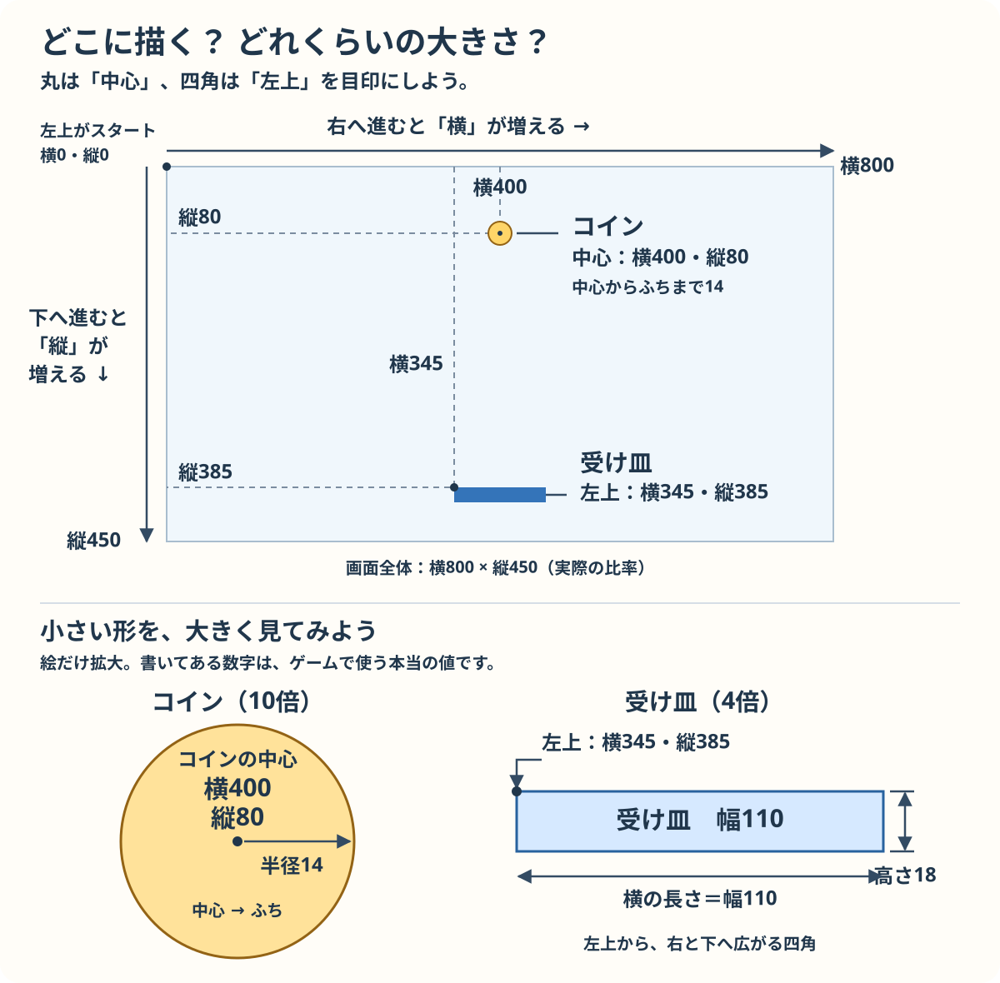
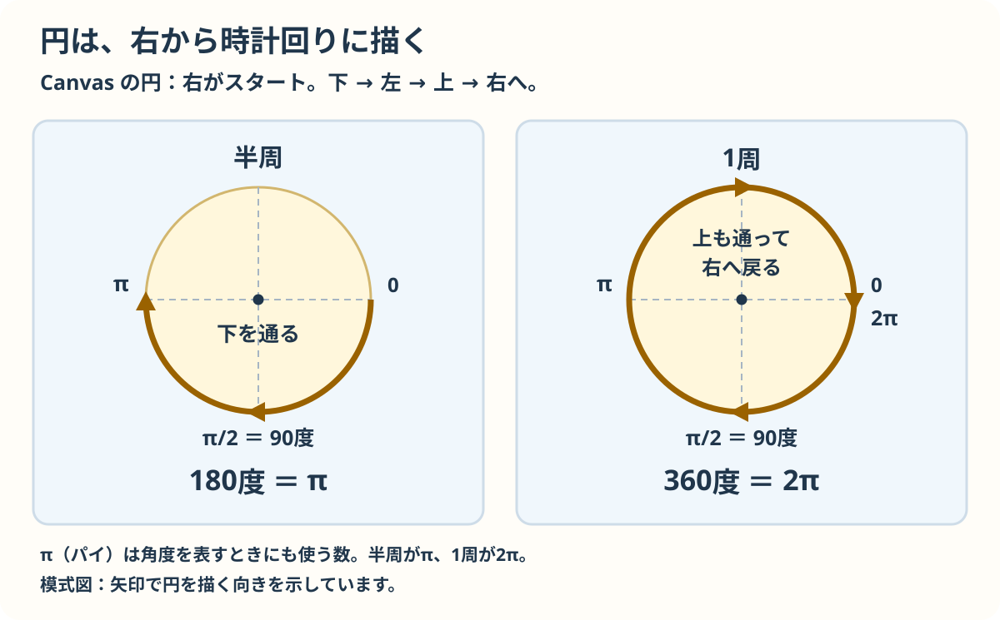
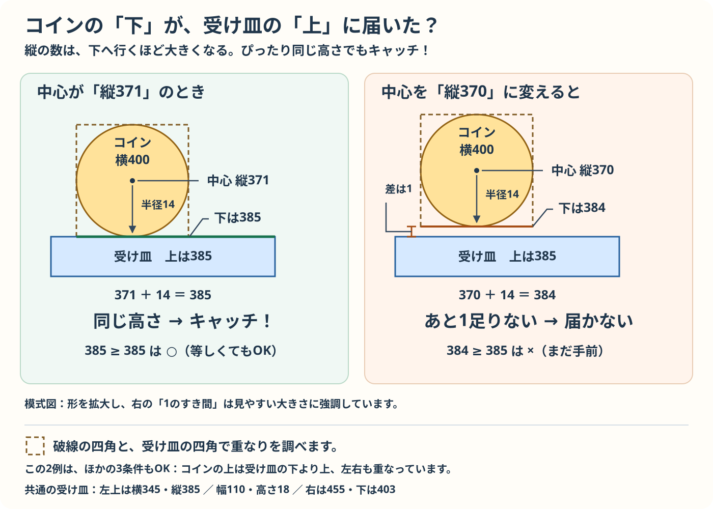

コインキャッチを
自分で書いて作ろう
Canvas（キャンバス）は、ブラウザの中に絵を描くための場所です。用意したひな型のファイルにコードを書き足し、絵を描く、動かす、キーで操作する、当たりを調べる、という順番でゲームを作ります。
この教材で使うのは、ブラウザと3つのファイルだけです。ライブラリ（追加の機能をまとめた道具）、ビルド（実行前にコードを変換する作業）、開発用サーバー（確認用にページを表示する仕組み）は必要ありません。ゲームを動かすためのインストールも不要です。操作にはパソコンのキーボードを使います。
準備から始める ↓準備
自分の作業用フォルダーを作る
WindowsでZIPを展開する（動画）
index.html を開きます。- ひな型のZIPを展開し、できたフォルダーを作業用にします。
- そのフォルダーの
index.htmlをブラウザーで開きます。空のゲーム画面が出れば準備できています。 - エディターで同じフォルダーを開きます。
このページは教材です。ゲームは埋め込んでいません。「制作物を別ページで開く」で見本だけを開けます。自分の制作物は my-game/index.html を開いて確かめます。
ページの名前を変える
作業用フォルダーの index.html を開き、次の行を置き換えます。
置き換える範囲
<title>JavaScript ゲーム制作ひな型</title>置き換えるコード
<title>コインキャッチ</title>ブラウザーのタブに表示する名前を変えます。
画面の説明を変える
同じ index.html の次の行を置き換えます。
置き換える範囲
<canvas id="game-canvas" width="800" height="450" aria-label="ゲーム画面">置き換えるコード
<canvas id="game-canvas" width="800" height="450" aria-label="コインキャッチのゲーム画面">canvas は絵を描く場所です。幅 800、高さ 450 の画面に名前を付け、aria-label で画面の内容を伝えます。
画面の背景色を変える
作業用フォルダーの style.css を開き、canvas の波括弧の中にある次の行を置き換えます。
置き換える範囲
background: #fff;置き換えるコード
background: #f7fbff;#f7fbff は少し青みのある白です。
保存して、作業用の index.html を再読み込みします。タブ名と画面の色が変われば準備完了です。
STEP 01
丸と四角を描く
1. 目標
空の Canvas に、コイン・受け皿・得点の文字を描きます。位置を表すデータと、画面に描く処理を分けます。
2. 小さな作業
上から順に書きます。各欄の「目印」は場所を探すためのもので、コピーするのは「追加」または「置き換え」のコードです。
受け皿の大きさと縦位置を決める
script.js の先頭近くで、次の行のすぐ下に空行を入れて追加します。
目印
const ctx = canvas.getContext("2d");追加するコード
const playerWidth = 110;
const playerHeight = 18;
const playerY = 385;変数は値に名前を付けて覚えるものです。const playerWidth = 110; は、後から入れ直さない変数 playerWidth を作り、幅 110 を入れます。= は右の値を左に入れ、; は文の区切りです。続く行では高さ 18、左上の縦位置 385 を決めます。
受け皿を中央に置く
次の行のすぐ下に追加します。
目印
const playerY = 385;追加するコード
let playerX = (canvas.width - playerWidth) / 2;let は後から値を変えられます。画面の幅 800 から受け皿の幅 110 を引き、2 で割ると左上の横位置は 345 です。
コインの大きさと位置を決める
次の行のすぐ下に空行を入れて追加します。
目印
let playerX = (canvas.width - playerWidth) / 2;追加するコード
const coinRadius = 14;
let coinX = canvas.width / 2;
let coinY = 80;半径は 14、中心の横位置は 400、縦位置は 80 です。場所を表す数字を座標と呼びます。画面の左上が (0, 0) で、右ほど横の値が、下ほど縦の値が大きくなります。

画面全体は実際の比率です。下の絵ではコインを10倍、受け皿を4倍に拡大しています。図の数字はゲームで使う値です。
coinX = 400、coinY = 80、coinRadius = 14。受け皿の playerX = 345、playerY = 385、幅 110、高さ 18 です。
受け皿を描く
draw() の波括弧の中で、次の行のすぐ下に空行を入れて追加します。
目印
ctx.clearRect(0, 0, canvas.width, canvas.height);追加するコード
ctx.fillStyle = "#2563eb";
ctx.fillRect(playerX, playerY, playerWidth, playerHeight);ひな型の canvas.getContext("2d") は絵を描く道具を取り出し、ctx に入れます。draw() は描画する命令をまとめた関数で、先に clearRect で前の画面を消します。fillStyle で色を選び、fillRect に左上の横・縦、幅、高さを順に渡して受け皿を描きます。
保存して作業用の index.html を再読み込みします。青い受け皿が中央に表示されます。
丸いコインを描く
円の右端から、Math.PI で半周、Math.PI * 2 で一周描きます。
Math.PI → 半周（180度）
draw() の中で、次の行のすぐ下に空行を入れて追加します。
目印
ctx.fillRect(playerX, playerY, playerWidth, playerHeight);追加するコード
ctx.fillStyle = "#f5b942";
ctx.beginPath();
ctx.arc(coinX, coinY, coinRadius, 0, Math.PI * 2);
ctx.fill();色を決め、beginPath() で新しい形を始めます。arc には中心の横位置、中心の縦位置、半径、始まりの角度、終わりの角度を順に渡します。0 から Math.PI * 2 までで円を一周します。fill() で塗ります。
角度の名前と図を確認する

右端の 0 から下へ進みます。半周が Math.PI、1周が Math.PI * 2 です。下端は Math.PI / 2。角度はラジアンで表し、円周を半径で割ると1周は 2π になります。
得点の文字を描く
draw() の中で、次の行のすぐ下に空行を入れて追加します。
目印
ctx.fill();追加するコード
ctx.fillStyle = "#172b4d";
ctx.font = "22px sans-serif";
ctx.fillText("コイン: 0", 24, 38);font で文字の大きさと書体を決めます。fillText に文字、横位置 24、縦位置 38 を順に渡して描きます。
3. 保存・再読み込み後の確認
保存してゲーム画面を更新する（動画）
script.js を保存してから、作業用の index.html を再読み込みします。動画では coinRadius を14から24に変えます。- script.js を保存し、作業用フォルダーの index.html を開いて再読み込みします。
- 上の中央に金色の丸、下の中央に青い受け皿、左上に「コイン: 0」が出ます。
- しばらく待っても位置が変わらないことを確かめます。
4. 小さな練習
coinRadius を 24 にして丸を大きくしましょう。draw() の #2563eb を #16a34a にして、受け皿を緑にしてみましょう。
次の STEP に進む前に、練習で変えた部分を上のコードの値に戻しましょう。
目次へ戻る ↑STEP 02
位置を更新して落下させる
1. 目標
毎フレーム、コインの縦位置を変えます。画面の下まで落ちたら、横位置を変えて上へ戻します。
2. 小さな作業
上から順に書きます。各欄の「目印」は場所を探すためのもので、コピーするのは「追加」または「置き換え」のコードです。
落ちる速さを決める
ファイルの先頭近くで、次の行のすぐ下に追加します。
目印
const coinRadius = 14;追加するコード
const coinSpeed = 3;1 回の更新でコインを下へ 3 動かします。
開始位置を戻す
start() の開き波括弧の内側、次の行のすぐ下に追加します。
目印
function start() {追加するコード
coinX = canvas.width / 2;
coinY = 80;start() はゲームの開始時に呼ばれます。コインの中心を横 400、縦 80 に戻します。
落とす
coinY += coinSpeed;
今は y = 80。次の更新で 3 を足すと 83。
速さ3なら 80 → 83 → 86。図の動きは8倍に拡大しています。
update() の開き波括弧の内側、次の行のすぐ下に追加します。
目印
function update() {追加するコード
coinY += coinSpeed;+= は今の値に足します。gameLoop() が update() と draw() を繰り返すたびに、コインが下がります。
保存して作業用の index.html を再読み込みします。コインが下へ動くことを確かめます。
画面の上に戻す関数を作る
update() の閉じ波括弧の外側です。次の draw() の行より前に関数全体を追加し、その後に空行を入れます。
目印
function draw() {追加するコード
function resetCoin() {
coinX = coinRadius + Math.random() * (canvas.width - coinRadius * 2);
coinY = -coinRadius;
}Math.random() は 0 以上 1 未満の数を作ります。半径の分だけ両端を避けた横位置にし、縦位置は画面のすぐ上にします。
画面の下まで落ちたか調べる
update() の波括弧の内側で、次の行のすぐ下に空行を入れて追加します。
目印
coinY += coinSpeed;追加するコード
if (coinY - coinRadius > canvas.height) {
resetCoin();
}if は条件が成り立つときだけ波括弧の中を実行します。coinY - coinRadius はコインの上端、> は左が右より大きいという意味です。上端が画面の高さをこえたら、resetCoin() で上に戻します。
3. 保存・再読み込み後の確認
- 保存して再読み込みします。上からコインが落ちてきます。
- コインが画面の下まで落ちると、次は別の横位置から現れます。
- 受け皿は動かず、コインは受け皿を通り抜けます。
4. 小さな練習
coinSpeed を 1 と 5 に変え、速さを比べましょう。次に resetCoin() の coinX = ...; を coinX = canvas.width / 2; にすると、毎回中央から落ちます。
次の STEP に進む前に、練習で変えた部分を上のコードの値に戻しましょう。
目次へ戻る ↑STEP 03
キーボードで受け皿を動かす
1. 目標
左右キーを押している間だけ受け皿を動かし、画面の端で止めます。押されたキーを記録し、その記録を使って位置を変えます。
2. 小さな作業
上から順に書きます。各欄の「目印」は場所を探すためのもので、コピーするのは「追加」または「置き換え」のコードです。
受け皿の速さを決める
先頭近くの次の行のすぐ下に追加します。
目印
const playerY = 385;追加するコード
const playerSpeed = 6;キーを押している間、1 回の更新で 6 動きます。
キーの状態を覚える
先頭近くの次の行のすぐ下に空行を入れて追加します。
目印
let coinY = 80;追加するコード
let leftPressed = false;
let rightPressed = false;false は押されていない状態です。左右を別々に記録します。
開始時に受け皿を戻す
start() の開き波括弧の内側、次の行のすぐ下に追加します。
目印
function start() {追加するコード
playerX = (canvas.width - playerWidth) / 2;開始時に受け皿を中央へ戻します。
キーの状態を消す関数を作る
resetCoin() の閉じ波括弧の外側、次の draw() の行の前に追加し、その後に空行を入れます。
目印
function draw() {追加するコード
function clearKeys() {
leftPressed = false;
rightPressed = false;
}左右の記録を両方とも押されていない状態に戻します。
開始時にキーの状態を戻す
start() の波括弧の内側にある次の行のすぐ下に追加します。
目印
coinY = 80;追加するコード
clearKeys();開始するときに、キーを押したままという記録を消します。
押した方向に動かす
受け皿の左端 playerX は、左へ6引き、右へ6足します。
今は x = 345。左へ −6、右へ ＋6。
ゲーム画面の中央だけを表示しています。
update() の波括弧の内側で、次の行の前に追加し、その後に空行を入れます。
目印
coinY += coinSpeed;追加するコード
if (leftPressed) {
playerX -= playerSpeed;
}
if (rightPressed) {
playerX += playerSpeed;
}左が押されていれば横位置を減らし、右なら増やします。if の条件が成り立つときだけ、中の処理が動きます。
画面の端で止める
update() の波括弧の内側で、次の行とその直後の空行をまとめて置き換えます。コードの末尾の改行も含めてコピーします。
置き換える範囲
coinY += coinSpeed;
置き換えるコード
playerX = Math.max(0, Math.min(playerX, canvas.width - playerWidth));
coinY += coinSpeed;
Math.min は小さい方、Math.max は大きい方を選びます。横位置を 0 から「画面の幅 − 受け皿の幅」までに収め、両端ではみ出さないようにします。
キーを押したときの処理を作る
resetCoin() の閉じ波括弧の外側、次の clearKeys() の前に関数全体を追加し、その後に空行を入れます。
目印
function clearKeys() {追加するコード
function handleKeyDown(event) {
if (event.code === "ArrowLeft") {
leftPressed = true;
event.preventDefault();
}
if (event.code === "ArrowRight") {
rightPressed = true;
event.preventDefault();
}
}event は押されたキーなどの情報です。event.code を === で比べ、対応する記録を true にします。preventDefault() は矢印キーによる画面のスクロールを防ぎます。
キーを離したときの処理を作る
handleKeyDown() の閉じ波括弧の外側、次の clearKeys() の前に関数全体を追加し、その後に空行を入れます。
目印
function clearKeys() {追加するコード
function handleKeyUp(event) {
if (event.code === "ArrowLeft") {
leftPressed = false;
}
if (event.code === "ArrowRight") {
rightPressed = false;
}
}離された方向の記録を false に戻します。
キーの操作を受け取る
draw() の閉じ波括弧の外側、次の gameLoop() の前に追加し、その後に空行を入れます。
目印
function gameLoop() {追加するコード
document.addEventListener("keydown", handleKeyDown);
document.addEventListener("keyup", handleKeyUp);
window.addEventListener("blur", clearKeys);addEventListener は出来事が起きたときに呼ぶ関数を登録します。keydown は押す、keyup は離す、blur は別のタブに移るなどして操作を受け取れなくなる出来事です。
操作の案内を表示する
draw() の波括弧の内側で、次の行のすぐ下に追加します。
目印
ctx.fillText("コイン: 0", 24, 38);追加するコード
ctx.fillText("← → キーで移動", 24, 430);画面の下に操作方法を描きます。
3. 保存・再読み込み後の確認
- 保存して再読み込みし、ゲームのタブをクリックして、ゲームがキー操作を受け取れるようにします。
- ← と → を押し続けると移動し、離すと止まります。両端でも受け皿全体が画面に収まります。
- 移動中に別のタブへ切り替えて戻り、キーを離したあとに動き続けないことを確認します。コインに触れても得点はまだ増えません。
4. 小さな練習
playerSpeed を 3、次に 9 に変えて操作感を比べましょう。両方の矢印キーを同時に押すと、左右の移動量が打ち消し合うことも確かめましょう。
次の STEP に進む前に、練習で変えた部分を上のコードの値に戻しましょう。
目次へ戻る ↑STEP 04
重なりを調べて得点をつける
1. 目標
コインが受け皿に触れたら1点を加え、次のコインを落とします。まだ残り回数はなく、何度でもキャッチを練習できます。
2. 小さな作業
上から順に書きます。各欄の「目印」は場所を探すためのもので、コピーするのは「追加」または「置き換え」のコードです。
得点を覚える
ファイルの先頭近くで、次の行のすぐ下に追加します。
目印
let rightPressed = false;追加するコード
let score = 0;score に集めた枚数を記録します。初めは 0 です。
開始時に得点を戻す
start() の波括弧の内側で、次の行のすぐ下に追加します。
目印
clearKeys();追加するコード
score = 0;再び始めるときも得点を 0 に戻します。
重なりを調べる関数を作る
update() の閉じ波括弧の外側、次の resetCoin() の前に関数全体を追加し、その後に空行を入れます。
目印
function resetCoin() {追加するコード
function coinTouchesPlayer() {
return (
coinY + coinRadius >= playerY &&
coinY - coinRadius <= playerY + playerHeight &&
coinX + coinRadius >= playerX &&
coinX - coinRadius <= playerX + playerWidth
);
}コインの上下左右の端と受け皿の端を比べます。上から順に、コインの下端が受け皿の上端に届いたか、上端が下端より上か、右端が左端に届いたか、左端が右端より左かを調べます。>= は以上、<= は以下なので、端が接したときも重なりです。&& ですべての条件をつなぎ、return で結果を返します。丸を囲む四角で調べるため、丸そのものが触れていなくても角が重なればキャッチになります。
- 下端（中心＋半径）
370 + 14 = 384- 受け皿の上端と比べる
384 >= 385
あと1ピクセルで届く
ほかの3条件は満たしています。図では1ピクセルの差を大きく描いています。

説明用の例です。コインの中心は x = 400、半径 14、受け皿の上は y = 385。左の絵は中心の y が 371、右は 370 です。見やすいよう形を拡大し、右のすき間も強調した模式図です。
下端は coinY + coinRadius。左の例では 371 + 14 = 385。ほかの3条件も成り立つとき、coinY + coinRadius >= playerY、coinY - coinRadius <= playerY + playerHeight、coinX + coinRadius >= playerX、coinX - coinRadius <= playerX + playerWidth をすべて満たせばキャッチです。円を囲む四角で調べるため、四角の角だけでも当たりになります。
キャッチしたら得点を増やす
update() の中で、右移動の中の行からコインが落ちたか調べる if の閉じ波括弧まで、次の範囲をまとめて置き換えます。右移動と画面端の処理は残します。
置き換える範囲
playerX += playerSpeed;
}
playerX = Math.max(0, Math.min(playerX, canvas.width - playerWidth));
coinY += coinSpeed;
if (coinY - coinRadius > canvas.height) {
resetCoin();
}置き換えるコード
playerX += playerSpeed;
}
playerX = Math.max(0, Math.min(playerX, canvas.width - playerWidth));
coinY += coinSpeed;
if (coinTouchesPlayer()) {
score += 1;
resetCoin();
} else if (coinY - coinRadius > canvas.height) {
resetCoin();
}重なっていたら 1 点を加えて次のコインを出します。重ならず画面の下に落ちた場合も次のコインを出します。
得点の値を表示する
draw() の波括弧の内側にある次の行を置き換えます。
置き換える範囲
ctx.fillText("コイン: 0", 24, 38);置き換えるコード
ctx.fillText("コイン: " + score, 24, 38);文字と score を + でつなぐと、集めた枚数が表示されます。
3. 保存・再読み込み後の確認
- 保存して再読み込みします。最初のコインは中央に落ちるので、動かずに待つと1点増えます。
- 次のコインを左右キーで追いかけます。1回のキャッチで1点だけ増え、コインは上に戻ります。
- わざと落としても得点が減らず、次のコインが現れます。受け皿の端でもキャッチできるか試します。
4. 小さな練習
playerWidth を 60 に変え、キャッチしにくくなるか確かめましょう。次に score += 1 を score += 2 にして、1枚の得点を変えてみましょう。
次の STEP に進む前に、練習で変えた部分を上のコードの値に戻しましょう。
目次へ戻る ↑STEP 05
クリアと再挑戦を作る
1. 目標
3回落とす前に5枚集めるとクリアにします。終了したら動きを止め、Space キーで最初から遊べるようにします。
2. 小さな作業
上から順に書きます。各欄の「目印」は場所を探すためのもので、コピーするのは「追加」または「置き換え」のコードです。
クリアの枚数と残り回数を決める
先頭近くの次の行のすぐ下に空行を入れて追加します。
目印
let score = 0;追加するコード
const targetScore = 5;
const startingLives = 3;
let lives = startingLives;5 枚でクリア、残り回数は 3 から始めます。lives は途中で減るため let です。
ゲームの状態を覚える
次の行のすぐ下に追加します。
目印
let lives = startingLives;追加するコード
let gameState = "playing";playing はプレイ中を表す文字です。終了時には別の文字に変えます。
開始時に残り回数と状態を戻す
start() の波括弧の内側で、次の行のすぐ下に追加します。
目印
score = 0;追加するコード
lives = startingLives;
gameState = "playing";開始時に残り回数を元に戻し、状態をプレイ中にします。
終了後は更新を止める
update() の開き波括弧の内側、次の行のすぐ下に追加します。コードの末尾の改行を含めると、後ろに空行が入ります。
目印
function update() {追加するコード
if (gameState !== "playing") {
return;
}
!== は同じではないという比較です。プレイ中でなければ return で更新を終えます。
目標に届いたらクリアにする
targetScore は5。score >= targetScore を満たすとクリアです。
4枚。目標は5枚。あと1枚！
update() の if (coinTouchesPlayer()) の内側で、次の 2 行をまとめて置き換えます。
置き換える範囲
score += 1;
resetCoin();置き換えるコード
score += 1;
if (score >= targetScore) {
gameState = "clear";
} else {
resetCoin();
}得点が目標以上なら状態を clear にします。まだ届かなければ次のコインを出します。
落としたら残り回数を減らす
update() の中で、次の else if から対応する閉じ波括弧までをまとめて置き換えます。
置き換える範囲
} else if (coinY - coinRadius > canvas.height) {
resetCoin();
}置き換えるコード
} else if (coinY - coinRadius > canvas.height) {
lives -= 1;
if (lives === 0) {
gameState = "gameover";
} else {
resetCoin();
}
}落とすと残り回数を 1 減らします。0 なら gameover、残っていれば次のコインを出します。
Space キーで再挑戦する
handleKeyDown() の波括弧の内側で、右キーを調べる次の if の閉じ波括弧のすぐ下に追加します。
目印
rightPressed = true;
event.preventDefault();
}追加するコード
if (event.code === "Space") {
event.preventDefault();
if (gameState !== "playing") {
start();
}
}Space が押され、プレイ中でなければ start() で初めから始めます。
得点と残り回数を表示する
draw() の波括弧の内側にある次の行を置き換えます。
置き換える範囲
ctx.fillText("コイン: " + score, 24, 38);置き換えるコード
ctx.fillText("コイン: " + score + " / " + targetScore, 24, 38);
ctx.fillText("のこり: " + lives, 650, 38);集めた枚数と目標、残り回数を表示します。
ルールを表示する
draw() の中で、次の行を置き換えます。コードの先頭には空行が含まれています。
置き換える範囲
ctx.fillText("← → キーで移動", 24, 430);置き換えるコード
ctx.font = "18px sans-serif";
ctx.fillText("← →：移動 / " + targetScore + "枚でクリア / " + startingLives + "回ミスで終了", 24, 430);文字を 18px にし、操作とクリア・終了の条件を表示します。
終了画面の背景を描く
draw() の波括弧の内側で、次の行のすぐ下に空行を入れて追加します。
目印
ctx.fillText("← →：移動 / " + targetScore + "枚でクリア / " + startingLives + "回ミスで終了", 24, 430);追加するコード
if (gameState !== "playing") {
ctx.fillStyle = "rgba(247, 251, 255, 0.92)";
ctx.fillRect(0, 0, canvas.width, canvas.height);
}プレイ中でなければ、薄い色の長方形を画面全体に描きます。最後の 0.92 は色の不透明さです。
結果の言葉を選ぶ
draw() の終了画面用 if の内側で、次の行のすぐ下に空行を入れて追加します。
目印
ctx.fillRect(0, 0, canvas.width, canvas.height);追加するコード
let message = "ゲームオーバー";
if (gameState === "clear") {
message = "クリア！";
}初めはゲームオーバーの言葉を用意し、クリアの状態なら言葉を変えます。
結果と再挑戦の案内を描く
draw() の終了画面用 if の内側で、次のクリアを調べる if の閉じ波括弧のすぐ下に空行を入れて追加します。
目印
if (gameState === "clear") {
message = "クリア！";
}追加するコード
ctx.fillStyle = "#172b4d";
ctx.textAlign = "center";
ctx.font = "bold 40px sans-serif";
ctx.fillText(message, canvas.width / 2, 195);
ctx.font = "24px sans-serif";
ctx.fillText("集めたコイン: " + score + " 枚", canvas.width / 2, 245);
ctx.fillText("Space キーでもう一度", canvas.width / 2, 295);
ctx.textAlign = "left";結果と集めた枚数、Space キーの案内を中央に描きます。最後に文字の位置合わせを左に戻します。
3. 保存・再読み込み後の確認
- 保存して再読み込みします。画面に得点、残り回数、操作とルールが表示されます。
- 5枚集めて「クリア！」を確認します。終了後に左右キーを押しても受け皿は動きません。Space キーで得点0・残り3・中央の位置に戻ります。
- 今度は3回落とし「ゲームオーバー」を確認します。こちらも Space キーで再挑戦でき、何度繰り返しても動きが速くならないことを確認します。
4. 小さな練習
targetScore を 8、startingLives を 5 に変えましょう。画面下のルール表示も変数から描いているので一緒に変わります。さらに受け皿の幅と落下速度を調整し、遊びやすい組み合わせを探しましょう。
うまく動かないとき
- エディターで保存してから、ゲームを開いているタブを再読み込みします。教材のタブだけを再読み込みしてもゲームは変わりません。
- 編集している
script.jsと、開いているindex.htmlが同じ作業用フォルダーにあるか確認します。 - 丸括弧
()、波括弧{}、引用符""の閉じ忘れを確認します。コード内の記号と英数字は半角で書きます。 - ブラウザの開発者ツール（動作を調べるための画面）を開き、Console という欄を見ます。赤いエラーがあれば、表示されたファイル名と行番号を確かめます。変数名は大文字・小文字も区別します。
- 各段階の
script.js 全体と見比べます。特に STEP 03 のイベント登録と、ファイル末尾のstart();・gameLoop();を確認します。
完成したら、色、受け皿の幅、落ちる速さ、必要な枚数を変えて、自分のゲームにしてみましょう。